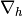
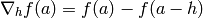
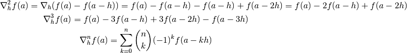
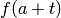
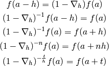
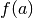
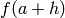
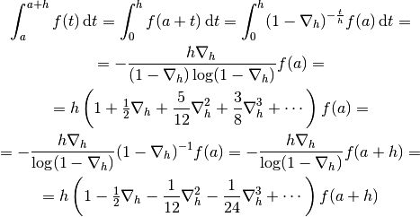
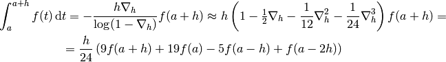

Ordinary Differential Equations¶
Finite Difference Formulas¶
We define the backward difference operator  by:

Repeated application gives:

We can also derive a formula for  where  is any real number,
independent of
is any real number,
independent of  :
:

Now we can express the following general integral using the function value from
either left () or right () hand side of the interval :

Code:
>>> from sympy import var, simplify, integrate
>>> var("nabla t h")
(nabla, t, h)
>>> s = integrate((1-nabla)**(-t/h), (t, 0, h))
>>> simplify(s)
h*nabla/(-log(1 - nabla) + nabla*log(1 - nabla))
>>> s.series(nabla, 0, 5)
h + h*nabla/2 + 5*h*nabla**2/12 + 3*h*nabla**3/8 + 251*h*nabla**4/720 + O(nabla**5)
>>> s2 = s*(1-nabla)
>>> simplify(s2)
-h*nabla/log(1 - nabla)
>>> s2.series(nabla, 0, 5)
h - h*nabla/2 - h*nabla**2/12 - h*nabla**3/24 - 19*h*nabla**4/720 + O(nabla**5)
Keeping terms only to third-order, we obtain:
![\int_a^{a+h} f(t) \,\d t
= - {h\nabla_h\over (1-\nabla_h) \log(1-\nabla_h)}f(a)
\approx h \left(1+\half\nabla_h + {5\over 12}\nabla_h^2+{3\over8}
\nabla_h^3\right) f(a)
=
= h f(a) + h\half\left(f(a)-f(a-h)\right)
+h{5\over 12}\left(f(a)-2f(a-h)+f(a-2h)\right)+
+h{3\over8}\left(f(a)-3f(a-h)+3f(a-2h)-f(a-3h)\right)
=
= h\left(1+\half+{5\over12}+{3\over8}\right)f(a)
-h\left(\half+{2\cdot5\over12}+{3\cdot3\over8}\right)f(a-h) +
+h\left({5\over12}+{3\cdot3\over8}\right)f(a-2h)
-h\left({3\over8}\right)f(a-3h)
=
= h{55\over24}f(a) -h{59\over24}f(a-h) +
h{37\over24}f(a-2h) -h{3\over8}f(a-3h)
=
= {h\over24}\left(55f(a) -59f(a-h) + 37f(a-2h) -9f(a-3h)\right)](../../_images/math/f44e719ee5ba68707df1cb69bcb0c726f205beaf.png)
Similarly:

Code:
>>> from sympy import var
>>> var("f0 f1 f2 f3")
(f0, f1, f2, f3)
>>> nabla1 = f0 - f1
>>> nabla2 = f0 - 2*f1 + f2
>>> nabla3 = f0 - 3*f1 + 3*f2 - f3
>>> 24*(f0 + nabla1/2 + 5*nabla2/12 + 3*nabla3/8)
-59*f1 - 9*f3 + 37*f2 + 55*f0
>>> 24*(f0 - nabla1/2 - nabla2/12 - nabla3/24)
f3 - 5*f2 + 9*f0 + 19*f1